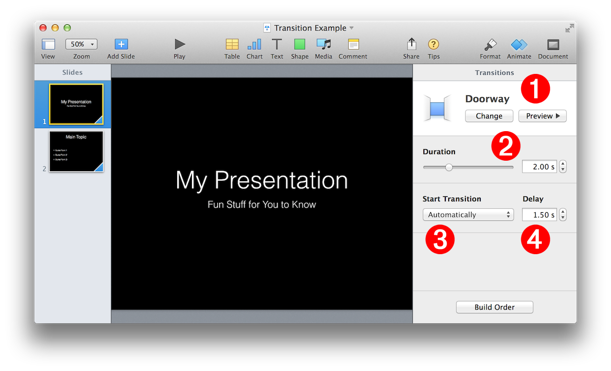

Transitions are visual effects that play as a presentation moves from one slide to the next. Subtle or dramatic, transitions really impact how a presentation is received by its audience.
The Keynote scripting dictionary contains no specific transition class. Instead, transitions are implemented as a slide property whose name is transition properties. The value of the transition properties property is an AppleScript record, called transition settings, listing the transition’s parameters and their corresponding values.
To apply a transition to a slide, you simply change the transition settings of the transition properties property (try saying that over and over). You can change one, two, three, or all of the transition settings in one statement.
Here’s an example script statement for setting a transition for a slide:
set the transition properties of the current slide to {transition effect:wipe, transition duration:2.0, transition delay:0, automatic transition:false}
An here are the relevant excerpts from the Keynote scripting dictionary:
The Transition Properties Property (Excerpt from Slide Class)
slide n : [inh. iWork container; see also Compatibility Suite] : A slide in a presentation document.
properties
transition properties ( transition settings ) : The transition settings to apply to the slide.
Slide Transition Settings
transition settings n : Properties common to all transitions.
properties
automatic transition ( boolean ) : Should the transition begin automatically? A value of false indicates to transition on click.
transition delay ( real ) : The number of seconds to wait until beginning the transition.
transition duration ( boolean ) : The number of seconds allocated for the transition to occur.
transition effect (
(⬇ see below ) Transition Settings Controls • The transition settings properties match the controls in the Keynote interface: Transition Effect 1 ; Transition Duration 2 ; Automatic Transition 3 ; Transition Delay 4 .

The following example script demonstrates how to apply transitions to existing and created slides: